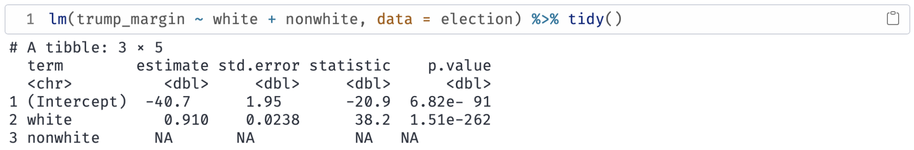

OLS variances
Multiple regression model:
\[ Y_i = \beta_0 + \beta_1 X_{1i} + \beta_2 X_{2i} + \cdots + \beta_{k} X_{ki} + u_i \]
It can be shown that the estimator \(\hat{\beta}_j\) on independent variable \(X_j\) is:
\[ \mathop{\text{Var}} \left( \hat{\beta_j} \right) = \dfrac{\sigma^2}{\left( 1 - R^2_j \right)\sum_{i=1}^n \left( X_{ji} - \bar{X}_j \right)^2}, \]
where \(R^2_j\) is the \(R^2\) from a regression of \(X_j\) on the other independent variables and the intercept
OLS variances
\[ \mathop{\text{Var}} \left( \hat{\beta_j} \right) = \dfrac{{\color{#81A1C1}\sigma^2}}{\left( 1 - \color{#81A1C1}{R_j^2} \right)\color{#BF616A}{\sum_{i=1}^n \left( X_{ji} - \bar{X}_j \right)^2}}, \]
Moving parts:
1. Error variance: As \(\color{#81A1C1}{\sigma^2}\) increases, \(Var(\hat{\beta}_j)\) increases
2. Total variation in \(X_j\): As \(\color{#BF616A}{\sum_{i=1}^n \left( X_{ji} - \bar{X}_j \right)^2}\) increases, \(Var(\hat{\beta}_j)\) decreases
3. Relationship across \(X_i\): As \(\color{#81A1C1}{R_j^2}\) increases, \(Var(\hat{\beta}_j)\) increases
. . .
3. is better known as Multicollinearity
Multicollinearity
Case in which two or more independent variables in a regression model are highly correlated.
. . .
One independent variable can predict most of the variation in another independent variable.
. . .
Multicollinearity leads to imprecise estimates. Becomes difficult to distinguish between individual effects from of independent variables.
OLS Assumptions
Classical assumptions for OLS change slightly for multiple OLS
A1. Linearity: The population relationship is linear in parameters with an additive error term.
A2. Sample Variation: No \(X\) variable is a perfect linear combination of the others
A3. Exogeniety: The \(X\) variable is exogenous
A4. Homoskedasticity: The error term has the same variance for each value of the independent variable
A5. Non-autocorrelation: The values of error terms have independent distributions
Perfect Collinearity
Case in which two or more independent variables in a regression model are perfectly correlated.
Ex. 2016 Election
OLS simultaneously cannot estimate parameters for white and nonwhite.
. . .

R drops perfectly collinear variables for you.
Multicollinearity Ex.
Suppose that we want to understand the relationship between crime rates and poverty rates in US cities. We could estimate the model
\[ \text{Crime}_i = \beta_0 + \beta_1 \text{Poverty}_i + \beta_2 \text{Income}_i + u_i \]
. . .
Before obtaining standard errors, we need:
\[ \mathop{\text{Var}} \left( \hat{\beta}_1 \right) = \dfrac{\sigma^2}{\left( 1 - R^2_1 \right)\sum_{i=1}^n \left( \text{Poverty}_{i} - \overline{\text{Poverty}} \right)^2} \]
. . .
\(R^2_1\) is the \(R^2\) from a regression of poverty on median income:
\[ \text{Poverty}_i = \gamma_0 + \gamma_1 \text{Income}_i + v_i \]
Multicollinearity
Scenario 1: \(\text{Income}_i\) explains most variation in \(\text{Poverty}_i\), then \(R^2_1 \rightarrow 1\)
- Violates the no perfect collinearity assumption
. . .
Scenario 2: If \(\text{Income}_i\) explains no variation in \(\text{Poverty}_i\), then \(R^2_1 = 0\)
. . .
Q. In which scenario is the variance of the poverty coefficient smaller?
\[ \mathop{\text{Var}} \left( \hat{\beta}_1 \right) = \dfrac{\sigma^2}{\left( 1 - R^2_1 \right)\sum_{i=1}^n \left( \text{Poverty}_{i} - \overline{\text{Poverty}} \right)^2} \]
. . .
A. Scenario 2.
Multicollinearity
As the relationships between the variables increase, \(R^2_j\) increases.
For high \(R^2_j\), \(\mathop{\text{Var}} \left( \hat{\beta_j} \right)\) is large:
\[ \mathop{\text{Var}} \left( \hat{\beta_j} \right) = \dfrac{\sigma^2}{\left( 1 - R^2_j \right)\sum_{i=1}^n \left( X_{ji} - \bar{X}_j \right)^2} \]
. . .
- Some view multicollinearity as a “problem” to be solved.
- Either increase power (\(n\)) or drop correlated variables
- Warning: Dropping variables can generate omitted variable bias.
Irrelevant Variables
Suppose that the true relationship between birth weight and in utero exposure to toxic air pollution is
\[ (\text{Birth Weight})_i = \beta_0 + \beta_1 \text{Pollution}_i + u_i \]
. . .
Suppose that an “analyst” estimates
\[ (\text{Birth Weight})_i = \tilde{\beta_0} + \tilde{\beta_1} \text{Pollution}_i + \tilde{\beta_2}\text{NBA}_i + u_i \]
. . .
One can show that \(\mathop{\mathbb{E}} \left( \hat{\tilde{\beta_1}} \right) = \beta_1\) (i.e., \(\hat{\tilde{\beta_1}}\) is unbiased).
However, the variances of \(\hat{\tilde{\beta_1}}\) and \(\hat{\beta_1}\) differ.
Irrelevant Variables

We can reasonably say that the NBA has no direct impact on birth weight, so it is doing more damage to the model than helping
Irrelevant Variables
The variance of \(\hat{\beta}_1\) from estimating the “true model” is
\[ \mathop{\text{Var}} \left( \hat{\beta_1} \right) = \dfrac{\sigma^2}{\sum_{i=1}^n \left( \text{Pollution}_{i} - \overline{\text{Pollution}} \right)^2} \]
The variance of \(\hat{\tilde\beta}_1\) from estimating the model with the irrelevant variable is
\[ \mathop{\text{Var}} \left( \hat{\tilde{\beta_1}} \right) = \dfrac{\sigma^2}{\left( 1 - R^2_1 \right)\sum_{i=1}^n \left( \text{Pollution}_{i} - \overline{\text{Pollution}} \right)^2} \]
Irrelevant Variables
Notice that \(\mathop{\text{Var}} \left( \hat{\beta_1} \right) \leq \mathop{\text{Var}} \left( \hat{\tilde{\beta_1}} \right)\) since,
\[ \sum_{i=1}^n \left( \text{Poll.}_{i} - \overline{\text{Poll.}} \right)^2 \geq \left( 1 - R^2_1 \right)\sum_{i=1}^n \left( \text{Poll.}_{i} - \overline{\text{Poll.}} \right)^2 \]
. . .
A tradeoff exists when including more control variables. Make sure you have good reason for your controls because including irrelevant control variables increase variances
Estimating Error Variance
We cannot observe \(\sigma^2\), so we must estimate it using the residuals from an estimated regression:
\[ s_u^2 = \dfrac{\sum_{i=1}^n \hat{u}_i^2}{n - k - 1} \]
- \(k+1\) is the number of parameters (one “slope” for each \(X\) variable and an intercept).
- \(n - k - 1\) = degrees of freedom.
- Using the first 5 OLS assumptions, one can prove that \(s_u^2\) is an unbiased estimator of \(\sigma^2\).
Standard Errors
The formula for the standard error is the square root of \(\mathop{\text{Var}} \left( \hat{\beta_j} \right)\):
\[ \mathop{\text{SE}}(\hat{\beta_j}) = \sqrt{ \frac{s^2_u}{( 1 - R^2_j ) \sum_{i=1}^n ( X_{ji} - \bar{X}_j )^2} } \]